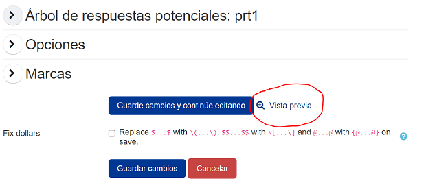

Autoría inicio rápido 1: una pregunta mínima de trabajo
1 - Primera pregunta | 2 - Variables de pregunta | 3 - Retroalimentación | 4 - Aleatorización | 5 - Test de preguntas | 6 - Preguntas de varias partes | 7 - Simplificación | 8 - Cuestionarios
La guía de inicio rápido de creación le muestra cómo escribir preguntas STACK. La parte 1 hace que funcione una pregunta mínima. El siguiente vídeo explica el proceso:
Antes de que empieces
Suponemos lo siguiente:
- Tienes acceso a un curso con STACK instalado.
- Está familiarizado con el formato simple para matemáticas. Algunos ejemplos básicos se proporcionan en la documentación CASText.
Creando una pregunta STACK mínima
Vaya a su curso, navegue hasta el banco de preguntas y cree una nueva pregunta con el tipo de pregunta "STACK".
Hay muchos campos, pero solo unos pocos son obligatorios:
- El "Nombre de la pregunta",
- El "Enunciado de la pregunta", que se muestra al alumno,
- La "Respuesta modelo" del profesor (dentro de "Entrada: ans1" en una pregunta predeterminada),
- Una prueba de "corrección".
De forma predeterminada, una nueva pregunta tiene automáticamente una entrada y un algoritmo para probar la exactitud de la respuesta.
Nombre de la pregunta
Debes darle un nombre a la pregunta, por ejemplo pregunta1.
Enunciado de la pregunta
Centrémonos en el problema de derivar con respecto a . Necesitamos escribir el texto de la pregunta en sí. Copie lo siguiente en el cuadro de texto Pregunta:
Diferenciar \((x-1)^3\) con respecto a x.
[[input:ans1]] [[validation:ans1]]
Notas:
- Moodle tiene una amplia variedad de editores de texto, por lo que las capturas de pantalla de esta guía de inicio rápido pueden verse ligeramente diferentes a su variante de Moodle. Además, el proceso de cortar y pegar puede incluir o no parte del formato.
- El texto contiene entornos matemáticos LaTeX. No utilizar entornos matemáticos
$..$y$$..$$. En su lugar debes usar\(..\)y\[..\]para matemáticas en línea y mostradas respectivamente. (Hay un convertidor masivo automático si tiene muchos materiales heredados). - Internamente la respuesta del estudiante será asignada a una variable
ans1. - La etiqueta
[[input:ans1]]denota la posición del cuadro en el que el estudiante pone su respuesta. - La etiqueta
[[validation:ans1]]será reemplazado por cualquier comentario relacionado con la validez de la entradaans1, e.g. errores de sintaxis causados por la falta de corchetes. - Estas etiquetas se pueden colocar en cualquier parte del texto de la pregunta.
Entrada: ans1
Desplácese hacia abajo: habrá una sección de Entrada en el formulario de edición. Haga clic en el encabezado Input: ans1 para revelar la configuración relevante.
Para una pregunta mínima, debemos especificar la Respuesta modelo. Haciendo esto
3*(x-1)^2
Notas
- La respuesta del estudiante se almacena en la variable de respuesta
ans1. - La respuesta del modelo debe ser una expresión sintácticamente válida en sintaxis CAS (Maxima), no en LaTeX. Esto significa que la multiplicación debe especificarse explícitamente, usando
*. - Entrada puede tener una variedad de tipos seleccionados por el menú desplejable tipo de Entrada. La Algebraica está por defecto, y es lo que necesitamos aquí.
- Una pregunta puede tener muchas entradas para varias partes. Estos se analizan más adelante en una parte posterior.
Evaluación de la exactitud de una respuesta: el Árbol de respuestas potenciales (ARP)
A continuación tenemos que decidir si la respuesta del estudiante es correcta.
Para calificar la respuesta del estudiante, necesitamos determinar sus propiedades matemáticas usando un algoritmo conocido como árbol de respuestas potenciales.
De forma predeterminada, una pregunta nueva contiene un árbol de respuesta potencial llamado prt1. Los comentarios generados por el árbol reemplazan la etiqueta [[feedback:prt1]] en el momento adecuado.
Configurar un nodo de respuesta potencial
Un árbol de respuesta potencial es un gráfico dirigido acíclico no vacío de nodos de respuesta potencial. De forma predeterminada, tenemos un nodo de respuesta potencial. en cada nodo
SAnses comparado conTAnscon la prueba de respuesta, posiblemente con una opción,- Si
true, luego ejecutamos la ramatrue, - Si
false, luego ejecutamos la ramafalse.
Cada rama puede entonces
- Asignar/actualizar la puntuación,
- Asignar comentarios formativos al estudiante,
- Deje una nota de respuesta para fines de informes estadísticos,
- Continúe con el siguiente nodo de respuesta potencial o finalice el proceso con
[stop].
Configuremos el primer nodo para determinar si el estudiante ha diferenciado correctamente.
- Especifique la variable
ans1en la entradaSAns. - Especifique la respuesta correcta en la entrada
TAnshaciendo:3*(x-1)^2. - Confirmar que tenemos
AlgEquiven el menú desplegable de Prueba (este es el predeterminado).
Guardando la pregunta
Ahora desplácese hasta el final de la página y presione [Guarde cambios y continúe editando]. Si la pregunta no se guarda, verifique cuidadosamente si hay errores, corríjalos y guárdelos nuevamente..
Ahora tenemos una pregunta mínima.
Para resumir, tenemos
- El "Nombre de la pregunta",
- El "Enunciado de la pregunta",
- La "respuesta modelo" del profesor,
- Una prueba de "exactitud".
A continuación deberíamos probar nuestra pregunta presionando el botón de enlace Vista previa en la parte inferior de la página.

Vista previa de la pregunta
Para acelerar el proceso de prueba, desplácese hacia abajo en la ventana de vista previa y en "Opciones de intento" u "Opciones de vista previa" (dependiendo de la versión de moodle) asegúrese de que tiene "Cómo se comportan las preguntas" en "Modo adaptativo". Si es necesario, "Empezar de nuevo con estas opciones". Esto le permitirá comprobar sus respuestas sin tener que Enviar y Empezar de nuevo repetidamente.
Con la vista previa abierta, prueba a teclear
3*(x-1)^2
en el cuadro de respuesta. El sistema establece en primer lugar la validez sintáctica de esta respuesta.
Presione el boton [Comprobar].
El sistema ejecuta el árbol de respuestas potenciales y establece si tu respuesta es equivalente a la respuesta modelo 3*(x-1)^2.
Validación de los estudiantes
Observe que hay un proceso de dos pasos para que el estudiante introduzca su respuesta.
La primera es la "validación", y normalmente los servidores tienen activada la "validación instantánea". Si la expresión es válida, STACK muestra al estudiante "Su última respuesta fue interpretada como:" y muestra su expresión. Una respuesta no válida crea un mensaje de error.
La segunda etapa se ejecuta cuando se introduce una expresión válida, y ésta evalúa el árbol de respuestas potenciales para valorar la respuesta del alumno.
Este proceso en dos fases es una característica única y esencial de STACK. Hay muchas opciones de validación para ayudar al estudiante. Por ejemplo, en el ejemplo anterior, todas las expresiones de ejemplo tienen una sintaxis estricta. Aquí utilizamos expresiones como 3*(x-1)^2, con símbolos * para denotar multiplicación. Puede dejar que los alumnos escriban expresiones como 3(x-1)^2 y aceptar la multiplicación implícita. Tenga en cuenta, sin embargo, que la entrada del profesor siempre tendrá que ser estricta para evitar ambigüedades. La documentación sobre estas opciones se encuentra en la sección entradas.
Próximo paso
Ahora debería poder escribir una pregunta sencilla en STACK.